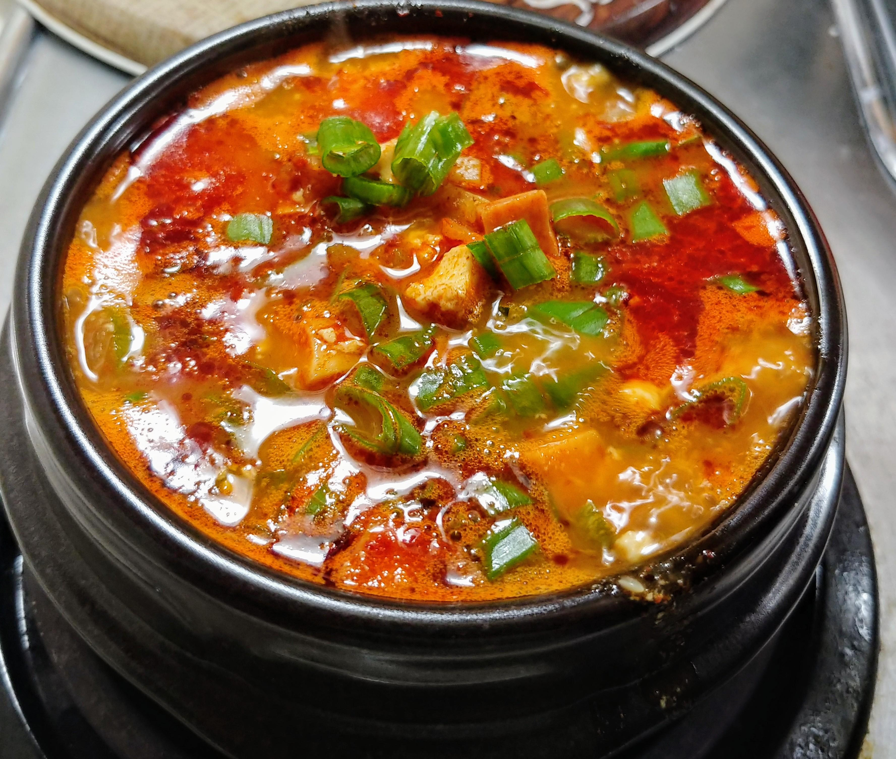

Sundubu Jjigae
Home Page

Sundubu Jjigae is a Korean stew made with soft (uncurdled) tofu as a highlight ingredient.
Ingredients
- Silken Tofu - 1 block
- Onion - 1 medium
- Garlic - 3 to 4 cloves
- Green Onion - 2 stalks
- Kimchi - 1/2 cup
- Sesame Oil - 1 table spoon
- Any cut of tender steak like skirt steak or flat iron steak - 6 to 7 oz
- Gochugaru coarse flakes - 1 to 2 tablespoons
- Gochujang - 1 tablespoon
- Fish sauce - 1 tablespoon
- Soy Sauce - 1 tablespoon
- Beef or Anchovie stock or water - 2 cups
- Optional: Salt and Pepper to taste
Instructions
- Cut the silken tofu into cubes and set aside.
- Slice the onion, mince the garlic, chop the green onions, and cut the kimchi into small pieces.
- Thinly slice the steak against the grain.
- In a ttukbbaegi or medium pot, heat 1 tablespoon of sesame oil over medium-high heat.
- Add the sliced beef and sauté for 2-3 minutes until it begins to brown. If you want, you can season the beef lightly with a pinch of salt and pepper. Remove the beef from the pot and set it aside.
- In the same pot, add the minced garlic and sliced onion. Cook for 2-3 minutes until fragrant and softened.
- Add the chopped kimchi to the pot and cook for another 2-3 minutes, stirring occasionally.
- Stir in gochugaru (Korean chili flakes) and gochujang (chili paste), mixing well to coat the ingredients.
- Pour in the beef or anchovy stock (or water) and bring the mixture to a simmer. Let it cook for about 5 minutes to allow the flavors to blend.
- Gently add the silken tofu cubes into the pot. You can break the tofu into smaller pieces if you prefer, or leave them whole for a more rustic texture.
- Return the cooked beef to the pot and stir gently.
- Add 1 tablespoon of soy sauce and 1 tablespoon of fish sauce. Taste and adjust the seasoning as needed, adding more soy sauce, fish sauce, or gochugaru if you want more flavor or spice.
- Allow the stew to simmer for about 5-10 minutes so the tofu absorbs the flavors and the soup becomes flavorful. You can taste and adjust seasoning if necessary.
- Put the sundubu jjigae into bowls. Garnish with the chopped green onions on top.